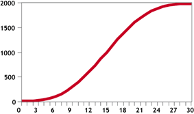
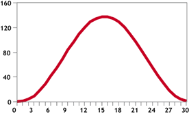
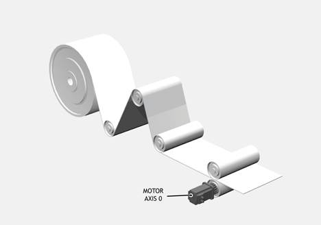
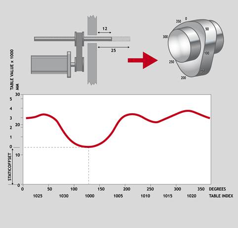
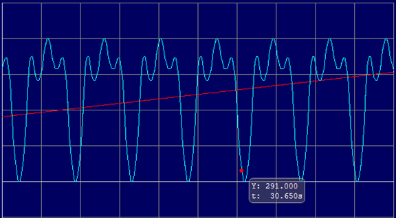
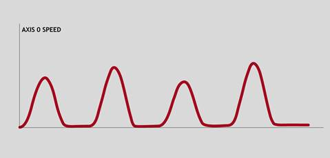
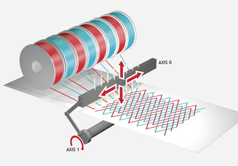

Axis Command
CAMBOX(start_point, end_point, table_multiplier, link_distance , link_axis[, link_options][, link_pos][, offset_start])
or for multi-axis loading mode:
CAMBOX(start_point, axis_count)
The CAMBOX command is used to generate movement of an axis according to a table of POSITIONS which define the movement profile. The motion is linked to the measured motion of another axis to form a continuously variable software gearbox. The table of values is specified with the TABLE command. The movement may be defined with any number of points from 3 up to the maximum table size available. The controller interpolates between the values in the table to allow small numbers of points to define a smooth profile.
The TABLE values are translated into positions by offsetting them by the first value and then multiplying them by the multiplier parameter. This means that a non-zero starting profile will be offset so that the first point is zero and then all values are scaled with the multiplier. These are then used as absolute positions from the start position.
Two or more CAMBOX commands executing simultaneously can use the same values in the table.
When the CAMBOX command is executing the ENDMOVE parameter is set to the end of the PREVIOUS move. The REMAIN axis parameter holds the remainder of the distance on the link axis.
|
start_point: |
The start position of the cam profile in the TABLE |
|
|
end_point: |
The end position of the cam profile in the TABLE |
|
|
table_multiplier: |
The table values are multiplied by this value to generate the positions. |
|
|
link_distance: |
The distance the link axis must move to complete CAMBOX profile. |
|
|
link_axis: |
The axis to link to. |
|
|
link_options: |
Bit value options to customise how CAMBOX operates |
|
|
Bit 0 |
link commences exactly when registration event MARK occurs on link axis |
|
|
Bit 1 |
link commences at an absolute position on link axis (see link_pos for start position) |
|
|
Bit 2 |
CAMBOX repeats automatically and bi-directionally when this bit is set. (This mode can be cleared by setting bit 1 of the REP_OPTION axis parameter) |
|
|
Bit 3 |
PATTERN mode. Advanced use of CAMBOX: allows multiple scale values to be used |
|
|
Bit 4 |
Reserved (see MOVELINK) |
|
|
Bit 5 |
Link is only active during a positive move on the link axis |
|
|
Bit 6 |
Reserved |
|
|
Bit 7 |
Forces the profile to start at a defined point in the link_dist (see offset_start for the position) |
|
|
Bit 8 |
link commences exactly when registration event MARKB occurs on link axis |
|
|
Bit 9 |
link commences exactly when registration event R_MARK occurs on link axis. (see link_pos for channel number) |
|
|
Bits 10…12 |
Reserved (see FLEXLINK and MOVELINK) |
|
|
Bit 13 |
Slave axis follows master axis DPOS (otherwise MPOS) |
|
|
Bit 14 |
Link is active during positive movement from a threshold. The threshold is updated to the highest positive value. |
|
|
link_pos: |
link_option bit 1 - the absolute position on the link axis in user UNITS where the CAMBOX is to be start. link_option bit 9 – the registration channel to start the movement on |
|
|
offset_start: |
The position defined on the link_dist where the profile will start |
|
The link_dist is in the user units of the link axis and should always be specified as a positive distance.
The link options for start (bits 0, 1, 8 and 9) may be combined with the link options for repeat (bits 2 and 5) and direction as well as offset_start (bit 7).
start_pos cannot be at or within one servo period’s worth of movement of the REP_DIST position.
TABLE values used by the CAMBOX command do not use UNITS. All points are scaled in encoder counts or stepper pulse counts.
|
0 |
TABLE start point for CAMBOX profile position data – axis 1 |
|
1 |
TABLE end point for CAMBOX profile position data – axis 1 |
|
2 |
TABLE data multiplier – axis 1 |
|
3 |
Link distance – axis 1 |
|
4 |
Link axis – axis 1 |
|
5 |
Link options – axis 1 |
|
6 |
Link position/Registration channel for link options – axis 1 |
|
7 |
Start position offset, forces the profile to start at a defined point in the link distance (options bit 7) – axis 1 |
|
8 |
Repeat for axis 2 parameters … |
Multi-axis mode CAMBOX is available in firmware v2.0339 and later
A subroutine can be used to generate a SINE shaped speed profile. This profile is used in the other examples.
'p is loop counter
'num_p is number of points stored in tables pos 0..num_p
'scale is distance travelled scale factor
profile_gen:
num_p = 30
scale = 2000
FOR p = 0 TO num_p
TABLE(p, ((-SIN(PI * 2 * p / num_p) / (PI * 2)) + p / num_p) * scale)
NEXT p
RETURN

This graph plots TABLE contents against table array position. This corresponds to motor POSITION against link POSITION when called using CAMBOX. The SPEED of the motor will correspond to the derivative of the position curve above:
Speed Curve

A pair of rollers feed plastic film into a machine. The feed is synchronised to a master encoder and is activated when the master reaches a position held in the variable “start”. This example uses the table points 0...30 generated in Example 1:
|
0 |
The start of the profile shape in the TABLE |
|
30 |
The end of the profile shape in the TABLE |
|
800 |
This scales the TABLE values. Each CAMBOX motion would therefore total 800*2000 encoder edges steps. |
|
80 |
The distance on the product conveyor to link the motion to. The units for this parameter are the programmed distance units on the link axis. |
|
15 |
This specifies the axis to link to. |
|
2 |
This is the link option setting - Start at absolute position on the link axis. |
|
variable “start” |
The motion will execute when the position “start” is reached on axis 15. |
start = 1000
FORWARD AXIS(1)
WHILE IN(2) = OFF
CAMBOX(0, 30, 800, 80, 15, 2, start)
WA(10)
WAIT UNTIL MTYPE = 0 OR IN(2) = ON
WEND
CANCEL
CANCEL AXIS(1)
WAIT IDLE

A motor on Axis 0 is required to emulate a rotating mechanical CAM. The position is linked to motion on axis 3. The “shape” of the motion profile is held in TABLE values 1000..1035.
The table values represent the mechanical cam but are scaled to range from 0-4000
TABLE(1000, 0, 0, 167, 500, 999, 1665, 2664, 3330, 3497, 3497)
TABLE(1010, 3164, 2914, 2830, 2831, 2997, 3164, 3596, 3830, 3996, 3996)
TABLE(1020, 3830, 3497, 3330, 3164, 3164, 3164, 3330, 3467, 3467, 3164)
TABLE(1030, 2831, 1998, 1166, 666, 333, 0)
BASE(3)
MOVEABS(130)
WAIT IDLE
'Start the continuously repeating cambox
CAMBOX(1000, 1035, 1, 360, 3, 4) AXIS(0)
FORWARD 'start camshaft axis
WAIT UNTIL IN(2) = OFF
REP_OPTION = 2 'cancel repeating mode by setting bit 1
WAIT IDLE AXIS(0) 'waits for cam cycle to finish
CANCEL 'stop camshaft axis
WAIT IDLE
The firmware resets bit 1 of REP_OPTION after the repeating mode has been cancelled.

Scope result:

CAMBOX(start_point, end_point, control_block_pointer, link_dist, link_axis, options)
Setting bit 3 (value 8) of the link options parameter enables the CAMBOX pattern mode. This mode enables a sequence of scaled values to be cycled automatically. This is normally combined with the automatic repeat mode, so the link options parameter should be set to 12. This diagram shows a typical repeating pattern which can be automated with the CAMBOX pattern mode:

The start and end parameters specify the basic shape profile ONLY. The pattern sequence is specified in a separate section of the TABLE memory. There is a new TABLE block defined: The “Control Block”. This block of seven TABLE values defines the pattern position, repeat controls etc. The block is fixed at 7 values long.
Therefore in this mode only there are 3 independently positioned TABLE blocks used to define the required motion:
|
SHAPE BLOCK |
This is directly pointed to by the CAMBOX command as in any CAMBOX. |
|
CONTROL BLOCK |
This is pointed to by the Control Block pointer. It is of fixed length (7 table values). It is important to note that the control block is modified during the CAMBOX operation. It must therefore be re-initialised prior to each use. |
|
PATTERN BLOCK |
The start and end of this are pointed to by two of the CONTROL BLOCK values. The pattern sequence is a sequence of scale factors for the SHAPE. |
Negative motion on link axis:
The axis the CAMBOX is linked to may be running in a positive or negative
direction. In the case of a negative direction link the pattern will execute in
reverse. In the case where a certain number of pattern repeats is specified
with a negative direction link, the first control block will produce one repeat
less than expected. This is because the CAMBOX loads a zero link position which
immediately goes negative on the next servo cycle triggering a REPEAT COUNT.
This effect only occurs when the CAMBOX is loaded, not on transitions from
CONTROL BLOCK to CONTROL BLOCK. This effect can easily be compensated for
either by increasing the required number of repeats, or setting the initial
value of REPEAT POSITION to 1.
|
start_point: |
The start position of the shape block in the TABLE |
|
end_point: |
The end position of the shape block in the TABLE |
|
control_block_pointer: |
The position in the table of the 7 point control block |
|
link_distance: |
The distance the link axis must move to complete CAMBOX profile. |
|
link_axis: |
The axis to link to. |
|
options: |
As CAMBOX, bit 3 must be enabled |
|
# |
Name |
Access |
Description |
|
0 |
CURRENT POSITION |
R |
The current position within the TABLE of the pattern sequence. This value should be initialised to the START PATTERN number. |
|
1 |
FORCE POSITION |
R/W |
Normally this value is -1. If at the end of a SHAPE the user program has written a value into this TABLE position the pattern will continue at this position. The system software will then write -1 into this position. The value written should be inside the pattern such that the value: CB(2)<=CB(1)<=CB(3) |
|
2 |
START PATTERN |
R |
The position in the TABLE of the first pattern value. |
|
3 |
END PATTERN |
R |
The position in the TABLE of the final pattern value |
|
4 |
REPEAT POSITION |
R/W |
The current pattern repeat number. Initialise this number to 0. The number will increment when the pattern repeats if the link axis motion is in a positive direction. The number will decrement when the pattern repeats if the link axis motion is in a negative direction. Note that the counter runs starting at zero: 0,1,2,3… |
|
5 |
REPEAT COUNT |
R/W |
Required number of pattern repeats. If -1 the pattern repeats endlessly. The number should be positive. When the ABSOLUTE value of CB(4) reaches CB(5) the CAMBOX finishes if CB(6)=-1. The value can be set to 0 to terminate the CAMBOX at the end of the current pattern. See note below, next page, on REPEAT COUNT in the case of negative motion on the link axis. |
|
6 |
NEXT CONTROL BLOCK |
R/W |
If set to -1 the pattern will finish when the required number of repeats are done. Alternatively a new control block pointer can be used to point to a further control block. |
READ/WRITE values can be written to by the user program during the pattern CAMBOX execution.
A quilt stitching machine runs a feed cycle which stiches a plain pattern before starting a patterned stitch. The plain pattern should run for 1000 cycles prior to running a pattern continuously until requested to stop at the end of the pattern. The cam profile controls the motion of the needle bar between moves and the pattern table controls the distance of the move to make the pattern.

The same shape is used for the initialisation cycles and the pattern. This shape is held in TABLE values 100..150
The running pattern sequence is held in TABLE values 1000..4999
The initialisation pattern is a single value held in TABLE (160)
The initialisation control block is held in TABLE (200).. TABLE (206)
The running control block is held in TABLE (300).. TABLE (306)
'Set up Initialisation control block:
TABLE(200, 160, -1, 160, 160, 0, 1000, 300)
'Set up running control block:
TABLE(300, 1000, -1, 1000, 4999, 0, -1, -1)
'Run whole lot with single CAMBOX:
'Third parameter is pointer to first control block
CAMBOX(100, 150, 200, 5000, 1, 12)
WAIT UNTIL IN(7) = OFF
TABLE(305, 0) 'Set zero repeats: This will stop at end of pattern
STOP 'exit the program
'sub-routines, example tables:
shape_block:
tablestart = 100
points = 51
'store the table points
TABLE(tablestart, 0.0000, 0.0000, 0.0000, 0.0001, 0.0024, 0.0112, 0.0306, 0.0645)
TABLE(tablestart + 8, 0.1166, 0.1903, 0.2883, 0.4132, 0.5668, 0.7505, 0.9650, 1.2104)
TABLE(tablestart + 16, 1.4863, 1.7917, 2.1250, 2.4839, 2.8659, 3.2677, 3.6860, 4.1169)
TABLE(tablestart + 24, 4.5563, 5.0000, 5.4437, 5.8831, 6.3140, 6.7323, 7.1341, 7.5161)
TABLE(tablestart + 32, 7.8750, 8.2083, 8.5137, 8.7896, 9.0350, 9.2495, 9.4332, 9.5868)
TABLE(tablestart + 40, 9.7117, 9.8097, 9.8834, 9.9355, 9.9694, 9.9888, 9.9976, 9.9999)
TABLE(tablestart + 48, 10.0000, 10.0000, 10.0000)
RETURN
init_block:
'multiplier for initial moves
TABLE(160, 100)
RETURN
run_block:
'sequence of multipliers to make the pattern.
TABLE(1000, 110, 0, 130, 0, 150, 0, 170, 0, 190, -200)
...
...
TABLE(4990, 105, 122, -123, 145, 144, 190, 109, 108, -190, 100)
RETURN
Load axes 0 to 4 using a single CAMBOX request linking all axes to axis 10.
DEFCONST link_ax 10
ATYPE AXIS(0)=0
ATYPE AXIS(1)=0
ATYPE AXIS(2)=0
ATYPE AXIS(3)=0
ATYPE AXIS(4)=0
‘Axis 0 position data
TABLE(2000,0,10,40,90,100,200,250,400)
‘Axis 1 position data
TABLE(2100,0,100,200,400,800,850,1000,1250,1600,2000)
‘Axis 2 position data
TABLE(2200,0,75,125,225,450,666)
‘Axis 3 position data
TABLE(2300,0,1000,2000,4000,4500,6000,7000,10000)
‘Axis 4 position data
TABLE(2400,0,500,1500,1800,3000,4000,5000,6000,7000,8000,8500,9000,12000)
‘Axis 0 CAMBOX parameters
TABLE(1000,2000,2007,1,1000,link_ax,128,0,200)
‘Axis 1 CAMBOX parameters
TABLE(1008,2100,2109,1,2000,link_ax,4,2500,0)
‘Axis 2 CAMBOX parameters
TABLE(1016,2200,2205,3,10000,link_ax,0,0,0)
‘Axis 3 CAMBOX parameters
TABLE(1024,2300,2307,1,5000,link_ax,2,5000,0)
‘Axis 4 CAMBOX parameters
TABLE(1032,2400,2412,1,20000,link_ax,0,0,0)
BASE(link_ax)
SPEED=250
ACCEL=10000
DECEL=10000
FORWARD
BASE(0)
CAMBOX(1000,5)
REP_OPTION , CAM , FLEXLINK , MOVELINK